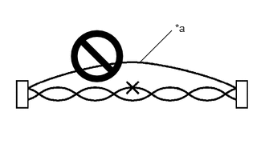
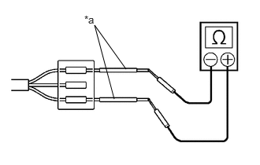

| Last Modified: 12-09-2025 | 6.11:8.1.0 | Doc ID: RM100000002ILXR |
| Model Year Start: 2024 | Model: Tacoma | Prod Date Range: [12/2023 - ] |
| Title: NETWORKING: CAN COMMUNICATION SYSTEM (for Gasoline Model): PRECAUTION; 2024 - 2026 MY Tacoma [12/2023 - ] | ||
PRECAUTION
PRECAUTIONS FOR DISCONNECTING CABLE FROM NEGATIVE (-) AUXILIARY BATTERY TERMINAL
NOTICE:
-
After the ignition switch is turned off, there may be a waiting time before disconnecting the negative (-) auxiliary battery terminal.
Click here
![2024 - 2026 MY Tacoma Tacoma HV [12/2023 - ]; SETUP: WHEN DISCONNECTING OR RECONNECTING BATTERY TERMINAL: BEFORE DISCONNECTING BATTERY](../../../../stylegraphics/info.gif)
-
When disconnecting and reconnecting the auxiliary battery.
HINT:
When disconnecting and reconnecting the auxiliary battery, there is an automatic learning function that completes learning when the respective system is used.
Click here
CAN COMMUNICATION SYSTEM TROUBLESHOOTING
(a) Because the order of diagnosis is important to allow correct diagnosis, make sure to begin troubleshooting using How to Proceed with Troubleshooting when CAN communication system related DTCs are output.
Click here
(b) Precaution for steering system handling
(1) Be careful when replacing parts. Incorrect replacement could affect the performance of the steering system and result in hazardous driving.
Click here
(c) Precaution for SRS airbag system handling
NOTICE:
This vehicle is equipped with a Supplemental Restraint System (SRS) which includes parts such as airbags for the driver and front passenger. Failure to carry out service operations in the correct sequence could cause unexpected SRS deployment during servicing and may cause a serious accident. Before servicing (including removal or installation of parts, inspection or replacement), be sure to read Precaution for SRS.
Click here
(d) Precaution for when disconnecting a wire harness from a CAN junction connector
(1) When disconnecting a wire harness from a CAN junction connector, use tape or tags to identify each connector and make sure to reconnect each connector to its original location on the CAN junction connector.
HINT:
- There is a CAN junction that can be installed at the preferred installation position. When the connector is disconnected, connect it at its original location to prevent incorrect installation.
-
For identifying where to connect CAN junctions and CAN junction connectors, refer to "Terminals of ECU".
Click here
(e) Bus line repair
(1) When repairing a CAN line or other communication line, make sure the untwisted portion of the wires is as short as possible, and warp the line with tape while twisting the Hi/Lo wires together so that there is no separation between them.
NOTICE:
Untwisting and separation between wires may degrade equipment performance.
(2) Do not use bypass wiring between connectors.
|
*a |
Bypass Wire |
NOTICE:
- The ability of the twisted bus lines to resist interference will be lost if bypass wiring is used.
- Do not use a twisted pair of wires for bypass wiring.
(f) Connector handling
(1) When checking resistance with a tester, insert the tester probes from the backside (harness side) of the connector.

|
*a |
Tester Probe |
(2) When it is not possible to insert the tester from the backside of the connector, using service wires, measure from the front side of the connector.
|
*a |
Service Wire |
(g) Precaution for when replacing a gateway function equipped ECU (sub bus monitoring ECU)
(1) When replacing a gateway equipped function ECU (sub bus monitoring ECU) with one which was installed to another vehicle, perform initialization of the sub bus monitoring ECU in order to clear stored bus information.
Click here
NOTICE:
If the stored bus information does not match the current sub bus configuration, DTCs may be stored and fail-safe functions may operate.
HINT:
It is not necessary to perform initialization of a gateway monitoring ECU (sub bus monitoring ECU) when using a sub bus monitoring ECU which was installed to another vehicle with the same sub bus configuration.
(h) Precautions for when a gateway function equipped ECU (sub bus monitor ECU) detects communication DTCs for ECUs not connected to the ECU
(1) Refer to precautions when replacing a gateway function equipped ECU (sub bus monitoring ECU) and initialize the connection information of the ECU.
(2) Clear the DTCs and check that no DTCs are output.
(i) Difference between genuine navigation receivers/radio and display receivers and optional navigation receivers/radio and display receivers
(1) Some optional navigation receivers/radio and display receivers are available as CAN compatible devices. Be aware that some optional navigation receivers/radio and display receivers do not have the same diagnostic features or characteristics of genuine navigation receivers/radio and display receivers.
NOTICE:
- Optional navigation receivers/radio and display receivers receive data from the CAN communication system. However, most optional navigation receivers/radio and display receivers do not send signals to the CAN bus main line.
- Most optional navigation receivers/radio and display receivers will not be displayed on the "CAN Bus Check" screen of the GTS.
- When checking for DTCs using the GTS, DTCs for optional navigation receivers/radio and display receivers will not be displayed on the GTS.
SENSOR EXPRESSIONS
(a) The descriptions for the blind spot monitor sensors differ depending on the system. The expressions listed in the table below are used in this Repair Manual.
|
Part Name |
Actual Part Name |
|---|---|
|
Blind spot monitor sensor (B) |
Blind spot monitor sensor RH |
|
Blind spot monitor sensor (A) |
Blind spot monitor sensor LH |
|
|
|